FRETWORK, the current build at phone size (10 October 2026)
Fourteen screens of skywolfstudio.com/fretwork/ (build v11) taken in headless Chrome on a fresh save, dark theme, at 412 and 360 CSS px wide. The brief that goes with them: ASTRA-FRETWORK-UI-BRIEF.md (plain text). The notes under each shot are what the studio already sees; the review should go past them. Nothing else on this site is under review.
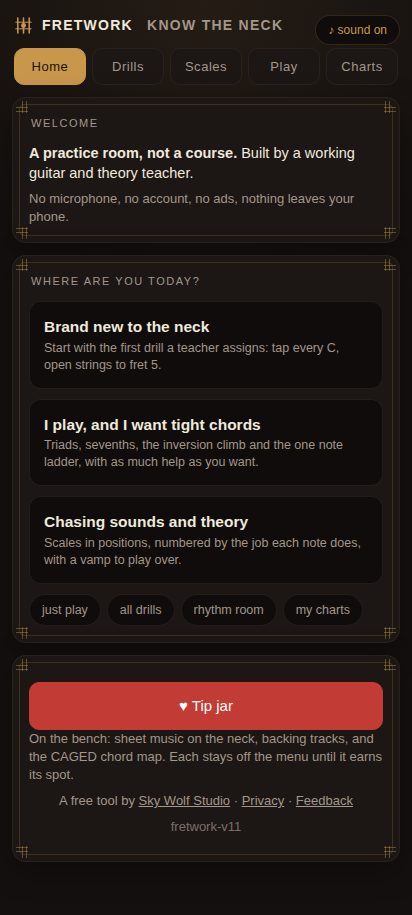
412-01-home Home, fresh save.
The red Tip jar (web only) is the loudest thing here.
The three doors are three similar grey slabs.
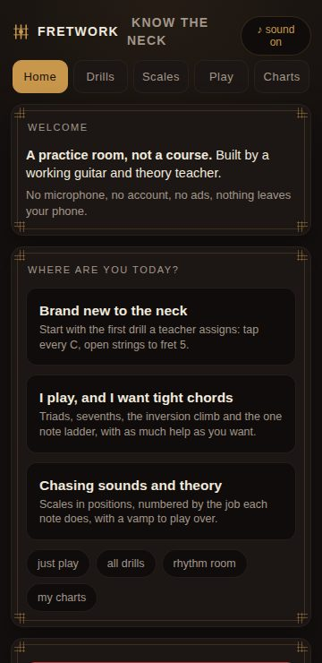
360-01-home Same at 360.
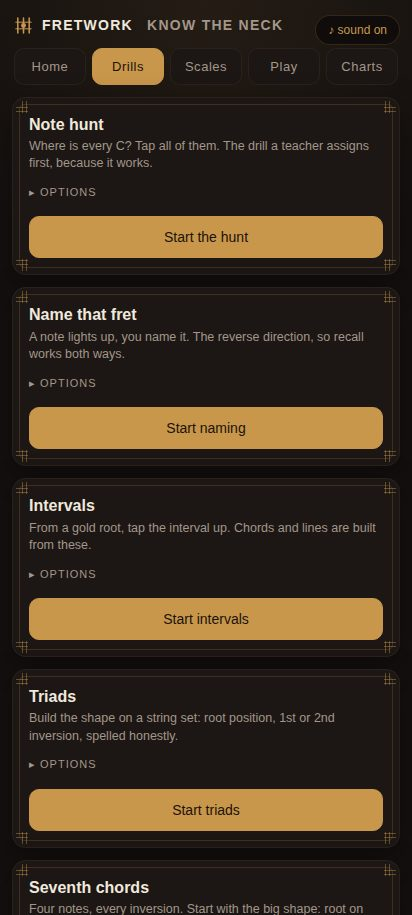
412-02-drills Drills, top.
Seven cards, each with collapsed OPTIONS and its own full width gold Start button.
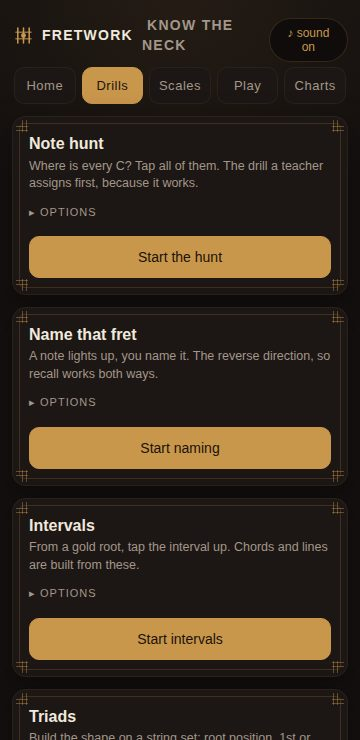
360-02-drills Same at 360.
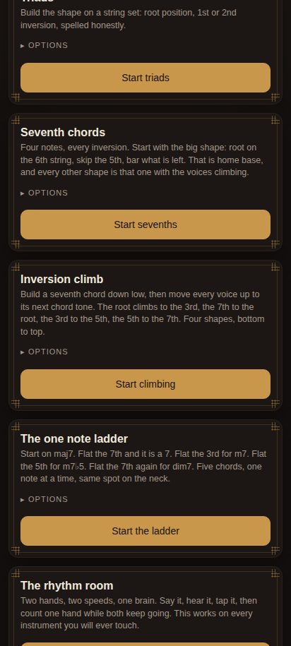
412-03-drills-lower Drills, scrolled.
Several screens long; nothing says what you did last time or what to do next.
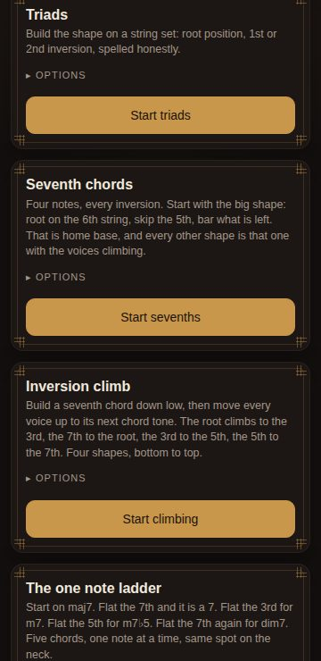
360-03-drills-lower Same at 360.
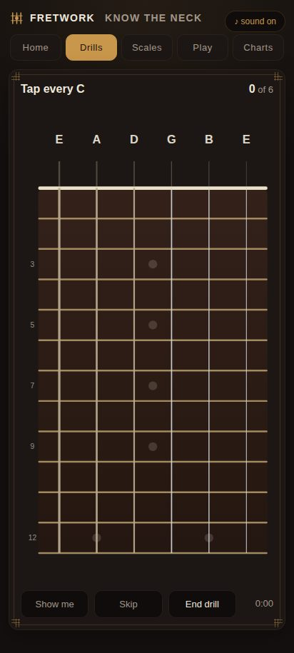
412-04-note-hunt Note hunt running: Tap every C.
Show me, Skip, End drill and the timer under the neck.
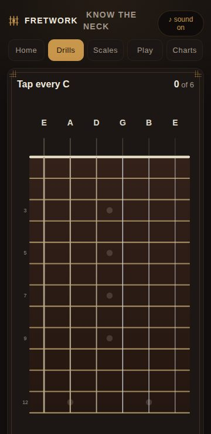
360-04-note-hunt Same at 360.
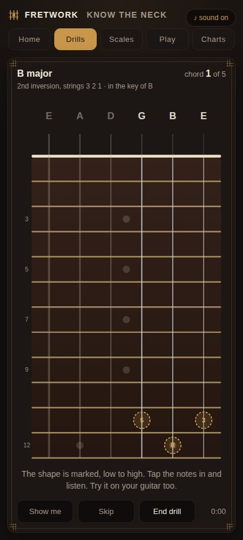
412-05-triad-lesson Triads lesson, chord 1 of 5, in the key of B (NEW set logic).
This shape sits at frets 11 and 12, the very bottom edge of the neck.
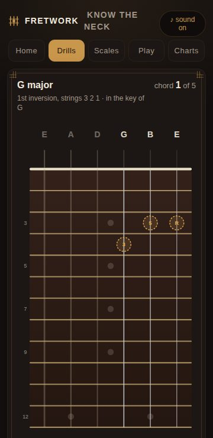
360-05-triad-lesson Same at 360.
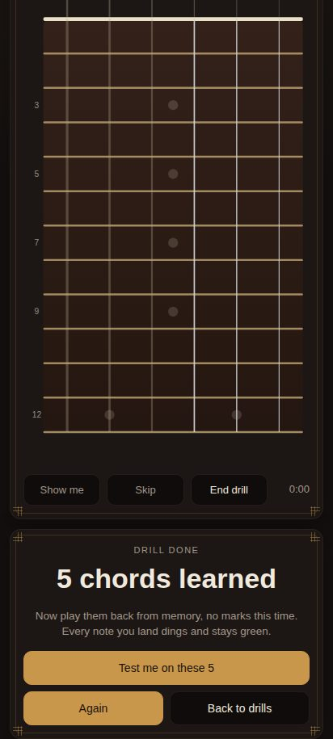
412-06-lesson-done Lesson done: Test me on these 5 (NEW).
The card sits under the neck and scrolls into view.
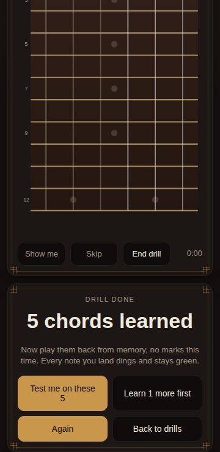
360-06-lesson-done Same at 360.
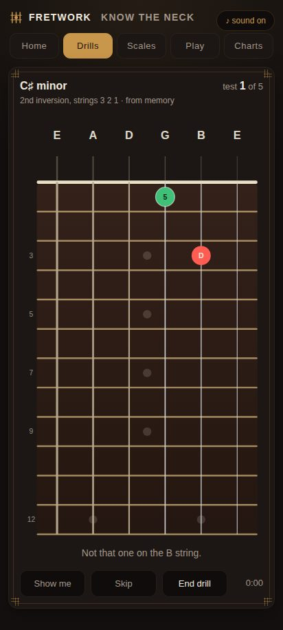
412-07-chord-test The chord test (NEW): a green right note, a red wrong note named D.
"Not that one on the B string."
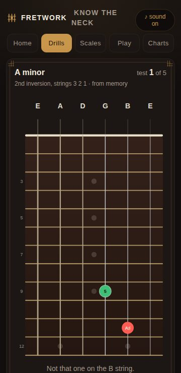
360-07-chord-test Same at 360.
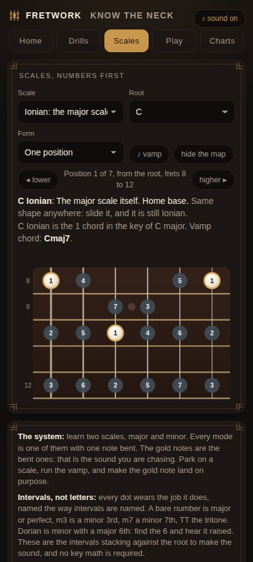
412-08-scales Scales, Ionian on C, one position.
A lot of reading before playing; the board window is small (frets 8 to 12).
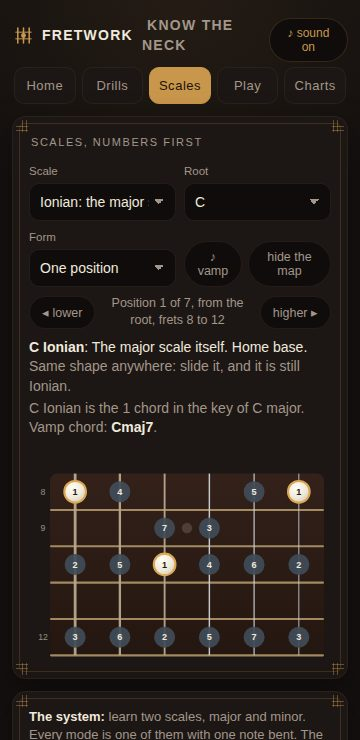
360-08-scales Same at 360.
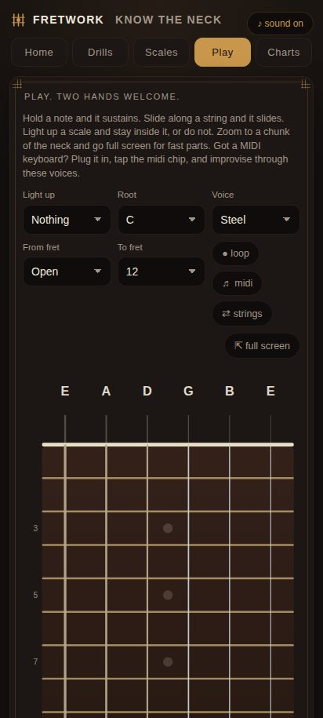
412-09-play Play.
Nine controls before the neck; the neck starts halfway down.
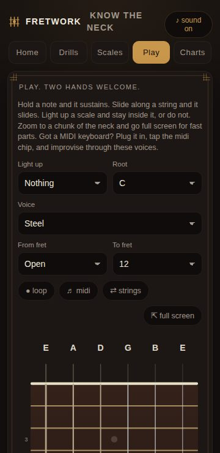
360-09-play Same at 360.
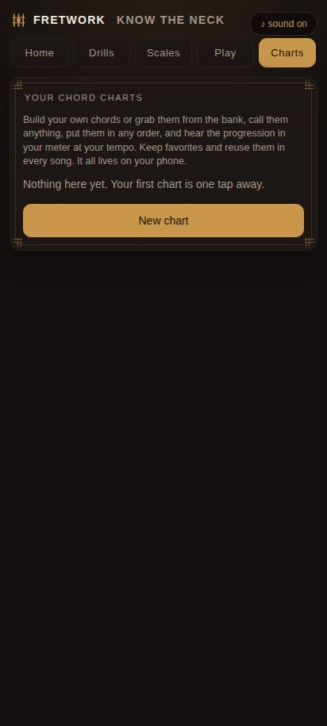
412-10-charts-empty Charts, empty.
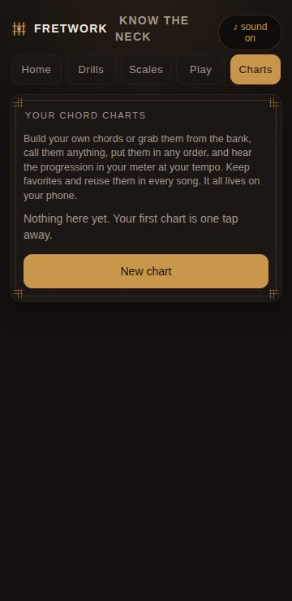
360-10-charts-empty Same at 360.
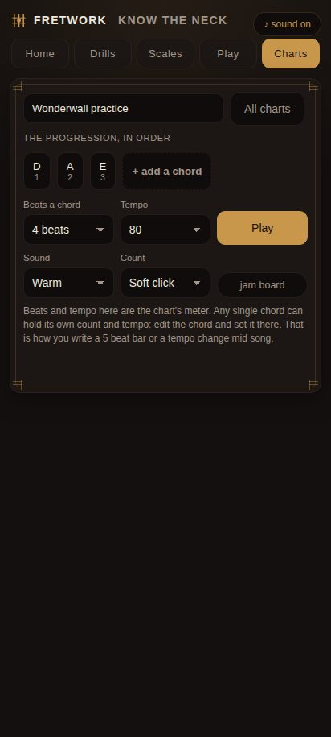
412-11-chart-editor A chart with D A E.
Small chord boxes; Beats, Tempo, Sound, Count, Play, jam board.
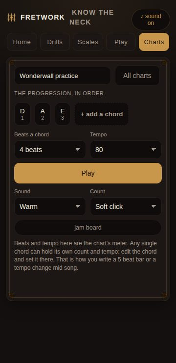
360-11-chart-editor Same at 360.
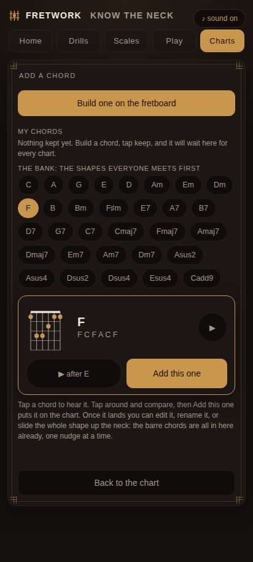
412-12-chord-picker The chord picker with the NEW try before you add bar.
F previewed: chord box, notes, replay, after E, Add this one.
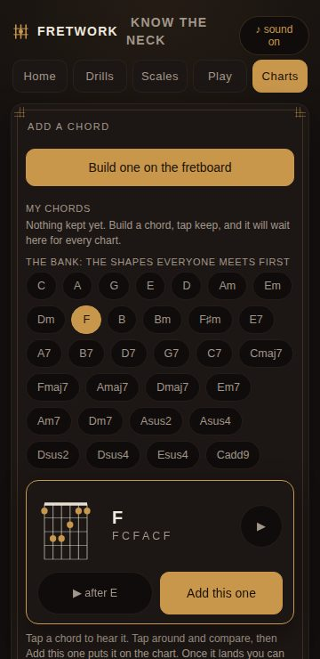
360-12-chord-picker Same at 360.
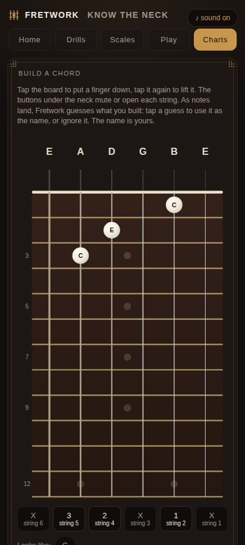
412-13-chord-builder The chord builder, three notes placed.
Per string mute and open buttons under the neck; the name guesses fall below the fold.